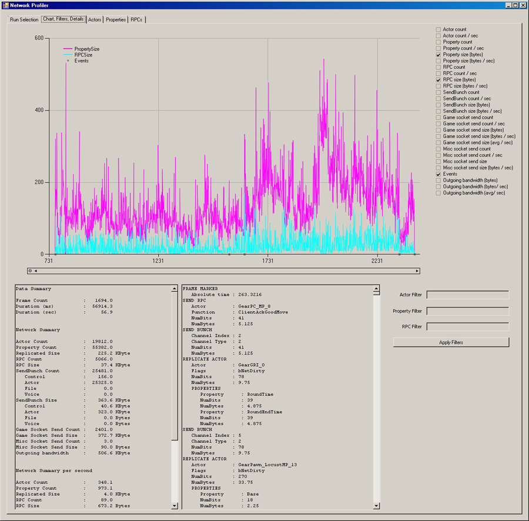
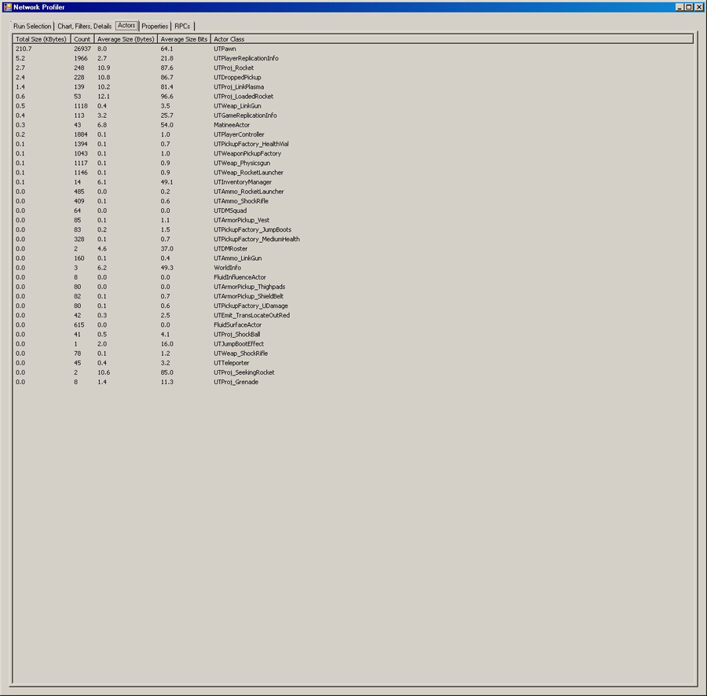
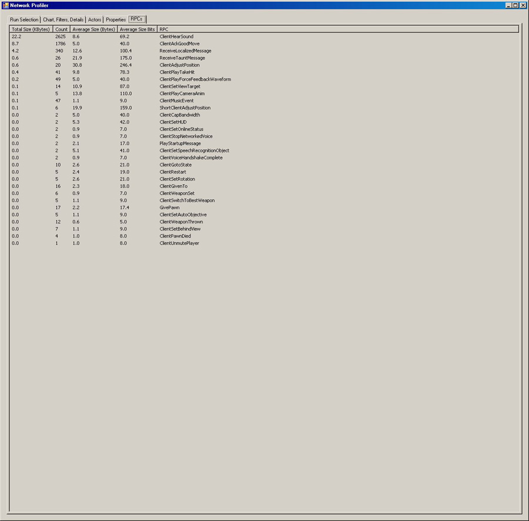

UDN
Search public documentation:
NetworkProfilerCH
English Translation
日本語訳
한국어
Interested in the Unreal Engine?
Visit the Unreal Technology site.
Looking for jobs and company info?
Check out the Epic games site.
Questions about support via UDN?
Contact the UDN Staff
日本語訳
한국어
Interested in the Unreal Engine?
Visit the Unreal Technology site.
Looking for jobs and company info?
Check out the Epic games site.
Questions about support via UDN?
Contact the UDN Staff
网络分析器
概述
这个独立的网络分析器是一个C#程序，它和引擎的功能结合使用可以为各种网络事件产生标记流。它主要关注的是从服务器向外连接的网络带宽，所以它仅捕获类似于 发送 的事件。
需求
需要为网络分析器安装以下软件组件：
设置虚幻引擎产生标记
要想使用网络分析器，只要简单地在游戏命令行中传入
-networkprofiler=TAG 命令即可，然后当具有网络数据时以及在退出或地图改变时都会开始产生标记，并会把一个 *.nprof文件写入到Profiling文件夹（ _也就是 C:\UDK\UDK-2012-01\UDKGame\Profiling_）中。
然后，通过NetworkProfiler.exe在Binaries 文件夹中打开这个创建并上传的文件，进行更深的调查分析。
网络分析器用户界面
"Run Selection(运行选中项)" 标签
这个标签允许您或者直接地打开一个 .nprof文件，或者如果进行了设置，它允许您从相关的数据库中选择各种运行。"Chart, Filter, Details(图表、过滤器、详情)" 标签
这个标签用于数据流的图形化表示。图表区域位于顶部，在其右侧具有要记录的潜在图表的复选框列表。 图表允许您通过拖拽选择来进行缩放，默认是缩放X轴。在图表区域按下鼠标右键将会切换当前激活的坐标轴。您可以通过点击滚动条上具有圆点的小圆圈来取消缩放操作。 数据概要窗口将会或者显示上一次拖拽选择的概要，或者如果单击它，则显示当前选中的帧。在它右侧的文本框列出了在那帧过程中所捕获的网络操作。 " actor、属性、RPC过滤器将会根据当点击"Apply Filters(应用过滤器)时复选框的内容来过滤显示的信息。简单地清除过滤器，并点击“Apply Filters(应用过滤器)”将会取消所有的过滤。 值得注意的是向外流出带宽的 图表/概要 考虑到了封包负担。这是个针对特定平台的值，可以通过设置NetworkStream.PacketOverhead来修改这个值。
"Actors" 标签
actors标签显示了所有的已经被复制的actors类型以及复制的actors的数量及大小的总结。
"属性"标签
属性标签显示了所有的已经被复制的属性以及复制的属性的数量及大小的总结。
"RPCs" 标签
RPCs标签显示了所有的已经被复制的RPCs以及复制的RPCs的数量及大小的总结。
捕获的数据
现在分析器捕获的数据是底层的 FSocket::Send*事件、UChannel::SendBunch、UActor::ReplicateActor actor/属性赋值、RPC发送、客户端 加入/离开 事件、并且具有帧标记。

{kind=link}
{kind=link}
{kind=link}